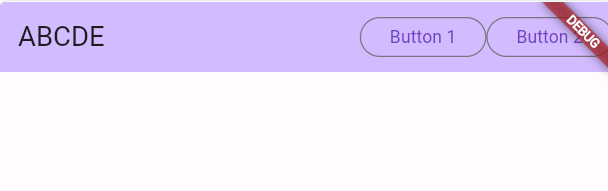
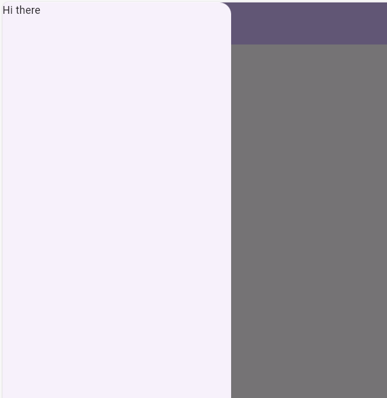
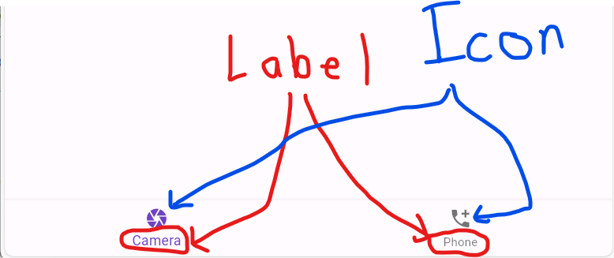

Scaffold is a layout that separates your page into several regions. There is an app bar, a body, and a footer.
In the AppBar() constructor, you can change the title: parameter and it will change what string appears at the top of your page.
The AppBar() also has an actions: parameter which takes an array of Widgets, just like a Column or Row. This is a special row in the top of the app for commonly used buttons. Go ahead and add two buttons:
AppBar(backgroundColor: Theme.of(context).colorScheme.inversePrimary,
title: Text("ABCDE"),
actions: [
OutlinedButton(onPressed: () { }, child:Text("Button 1")),
OutlinedButton(onPressed: (){ }, child: Text("Button 2"))]
),
You'll see a row of buttons on the top right of "Action buttons".

To get rid of the "Debug" banner, add this parameter debugShowCheckedModeBanner: false, to the MaterialApp() constructor:
return MaterialApp(
debugShowCheckedModeBanner: false,
title: 'Flutter Demo',
theme: ThemeData(
NavigationDrawer - the Scaffold also has a drawer: parameter which lets the user show a pop-out page from the left side of the page:
drawer:Drawer(child:Text("Hi there")),

The child: element can again be a Column() of items going down the side of the page.
The bottom navigation bar is a set of icons you can put at the bottom of the page for easy navigation:
BottomNavigationBar(items: [], onTap:(btnIndex){ } )
The items array should be a bunch of BottomNavigationBarItem objects:
BottomNavigationBarItem( icon: Icon(Icons.camera), label: 'Camera' ),
BottomNavigationBarItem( icon: Icon(Icons.add_call), label: 'Phone' ),
The icon parameter has many possible pre-installed values to choose from. You can also set a label for the tabs:

The BottomNavigationBar also has an onTap: parameter that takes a function to call when the user presses one of the items. This function should take an int representing the index of which of the items was selected.
onTap: (buttonIndex) { } ,